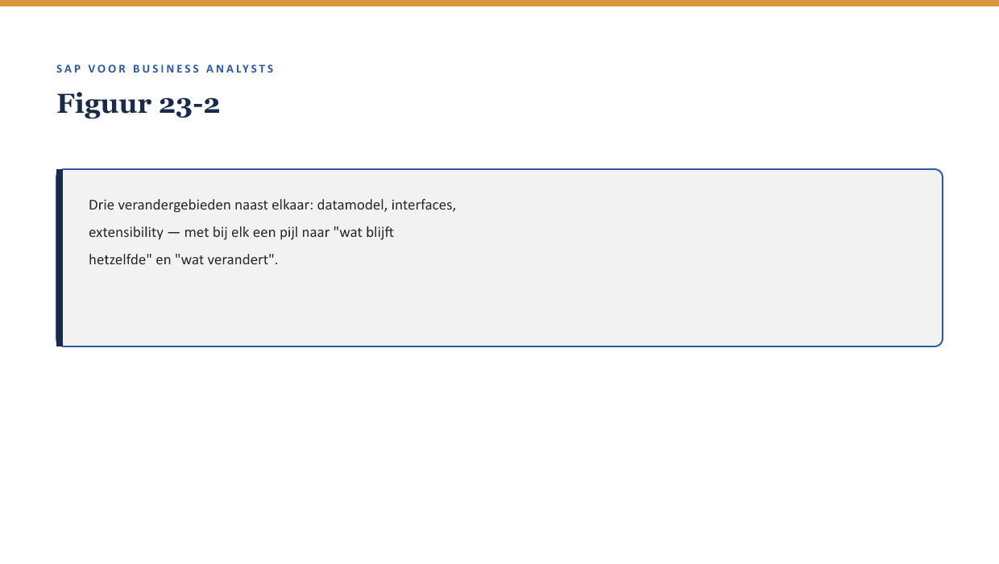

Deel 23 — S/4HANA for Insurance: wat verandert er
Slidedeck · Niveau 3 Expert · Cursus SAP voor Business Analysts · Ductus
Slidetypen: titleSlide, sectionSlide, bulletsSlide, statementSlide, quoteSlide, tableSlide, figureSlide, opdrachtSlide.
Slide 1 — titleSlide
S/4HANA for Insurance: wat verandert er Deel 23 · Niveau 3 Expert · Cursus SAP voor Business Analysts
Slide 2 — quoteSlide
“Alles wat je in FS-PM hebt geleerd, is gebouwd op de klassieke laag. Wat verandert daarmee bij een overstap naar S/4HANA?” — Priya Chandra
Slide 3 — figureSlide

Slide 4 — statementSlide
Geen einde levenscyclus.
Wel verandering in hoe het werkt.
Slide 5 — bulletsSlide
Wat we vandaag doen
- FS-PM leeft door binnen S/4HANA
- Wat concreet verandert: datamodel, interfaces, extensibility
- Het migratiepad: drie vragen die anders zijn
- Terug naar Meridiaans keuze
Slide 6 — figureSlide

Slide 7 — opdrachtSlide
Opdracht 23.1 — Blijft of verandert?
Vier items — concept (blijft) of implementatie (verandert)?
Slide 8 — quoteSlide
Dit deel maakt de disclaimer-methode zelf onderwerp van gesprek: zelfs de grens tussen concept en implementatiedetail is hier nog in beweging. — Kernzin, reader §3
Slide 9 — sectionSlide
Het migratiepad
Slide 10 — bulletsSlide
Drie migratievragen
- Blijft de BTX-geschiedenis traceerbaar?
- Moeten custom uitbreidingen opnieuw beoordeeld worden?
- Wat betekent een overgangsperiode voor lopende claims?
Slide 11 — opdrachtSlide
Opdracht 23.2 — Drie vragen toepassen
Formuleer ze specifiek voor Meridiaans FS-PM-implementatie.
Slide 12 — quoteSlide
Een migratie is geen nieuwe implementatie met dezelfde vragen — het is een implementatie met een extra laag vragen over continuïteit. — Kernzin, reader §5
Slide 13 — bulletsSlide
Samenvatting in vijf zinnen
- FS-PM leeft door als Policy Management binnen S/4HANA
- Drie gebieden veranderen concreet: datamodel, interfaces, extensibility
- De conceptuele kern uit niveau 2 blijft grotendeels stabiel
- Een migratie vergt continuïteitsvragen naast de gewone fit-gap-vragen
- Verifieer bij een concreet migratiebesluit altijd de actuele SAP-roadmap
Slide 14 — titleSlide
Volgende deel Case: een proces implementeren Deel 24